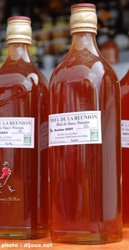

Comme tous les ans à la même époque, le Miel Vert reprend ses quartiers d’été sur la plaine des Cafres. C’est en effet en plein été que le miel est récolté et comme beaucoup d’apiculteurs ne font qu’une récolte, le miel arrive en ce moment sur les étales. Il se vend au litre, il est encore liquide et n’est pas encore vraiment mûr. C’est pour cela qu’on l’appelle miel vert.
Mais au-delà de l’apiculture qui est une filière peï florissante (sans mauvais jeu de mots), le Miel Vert annuel est la plus grande foire agricole de la Réunion. Cette foire, organisée par la commune du Tampon, a une renommée et une fréquentation qui n’a rien à envier aux foires agricoles de métropole. Comme ailleurs, les spectacles attirent beaucoup de monde qui en proffitent alors pour déhambuler le long des stands des exposants.
Cette manifestation n’a pas de site web. Celui du Tampon (www.le-tampon.fr.st) ressemble
à un vieux site perso pas à jour, Je ne sais pas si c’est le site de la mairie. Ceci indique que la municipalité n’a pas vraiment de stratégie de présence sur le web. Encore une fois, c’est la famille dijoux qui nous donne des cybernouvelles de cette manifestation. (Donnait, parce que l'article de 2007 n'est plus en ligne.) Cette année l’accent est mis sur l’élevage, principalement caprin et bovin.
Dans les hauts du Tampon, les paysages ressemblent parfois aux paysages alpins et c’est là que l’on retrouve la plupart des élevages bovins de l’île, spécialement à la Plaine des Cafres. C’est d’ailleurs sur cette même plaine des Cafres que se trouve la foire du Miel Vert.
On me signale aussi par mail qu’il y a des photos de Miel Vert sur le site de la tribu 102 FM mais la radio, comme les photos ont aujourd’hui disparu.
La mairie du Tampon possède aujourd’hui un vrai site digne de ce nom ce qui me fait retirer ce que je disais quelques lignes plus haut et quelques années avant.
Pour d’autres manifestations apicoles, voir aussi le site pour le développement de l’apiculture à la Réunion.